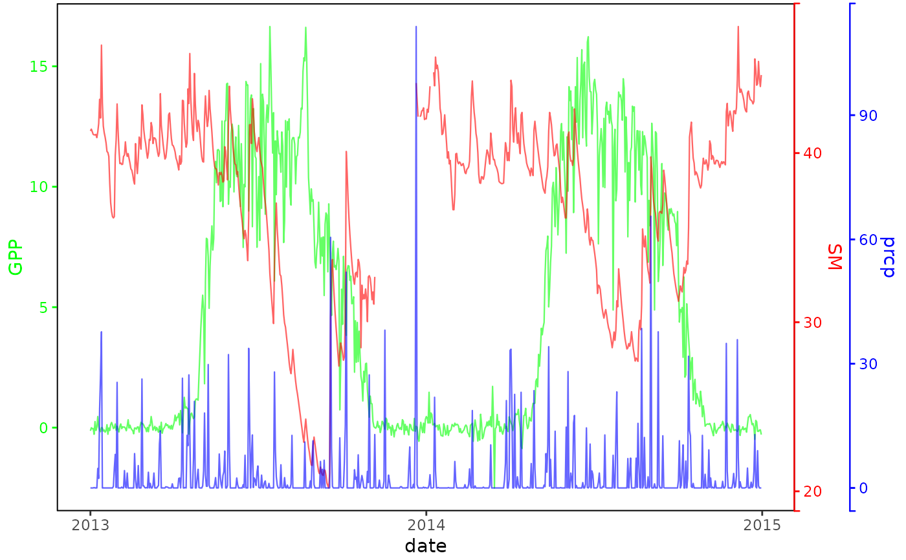

ggplot_multiaxis.Rdggplot_multiaxis
ggplot_multiaxis(..., linewidth = 1.4, tck = 0.2, x = -0.02)
ggplot_multiAxis(..., linewidth = 1.4, tck = 0.2, x = -0.02)library(ggplot2)
library(rlang)
#>
#> Attaching package: ‘rlang’
#> The following object is masked from ‘package:data.table’:
#>
#> :=
#> The following object is masked from ‘package:magrittr’:
#>
#> set_names
library(gg.layers)
plot_1var <- function(d, var, color = "black", lwd = 0.4, alpha = 0.6) {
p <- ggplot(d, aes(date, !!sym(var))) +
geom_line(color = color, linewidth = lwd, alpha = alpha) +
# facet_wrap(~site) +
scale_x_date(date_breaks = "1 year", date_labels = "%Y") +
theme(
panel.background = element_rect(fill = "transparent", color = "black"),
plot.margin = margin(r = 5, l = 5, t = 2, b = 2),
axis.ticks.y.left = element_line(color = color),
axis.text.y.left = element_text(color = color),
axis.title.y.left = element_text(color = color),
axis.ticks.y.right = element_line(color = color),
axis.text.y.right = element_text(color = color),
axis.title.y.right = element_text(color = color, margin = margin(l = 2, r = 5)),
panel.grid.major = element_blank(), # get rid of major grid
panel.grid.minor = element_blank()
) # get rid of minor grid
p
}
# GPP_US_MMS = d[year(date) >= 2013]
# usethis::use_data(GPP_US_MMS)
p_gpp <- plot_1var(GPP_US_MMS, "GPP", color = "green")
p_sm <- plot_1var(GPP_US_MMS, "SM", color = "red")
p_prcp <- plot_1var(GPP_US_MMS, "prcp", color = "blue")
p <- ggplot_multiaxis(p_gpp, p_sm, p_prcp, x = -0.02, linewidth = 1.2)
p
